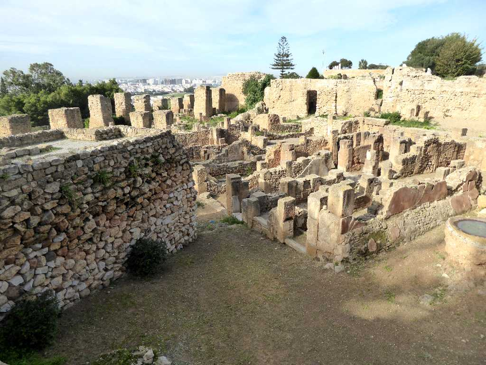
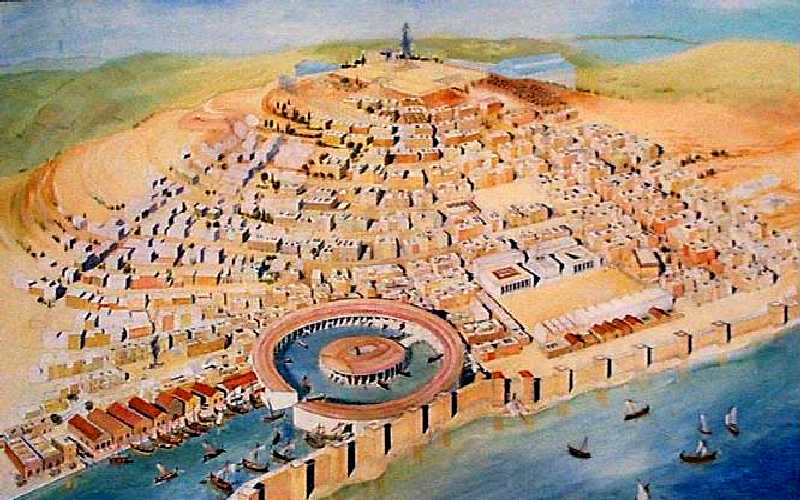
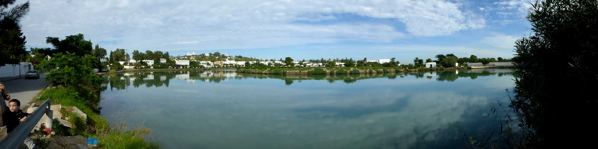
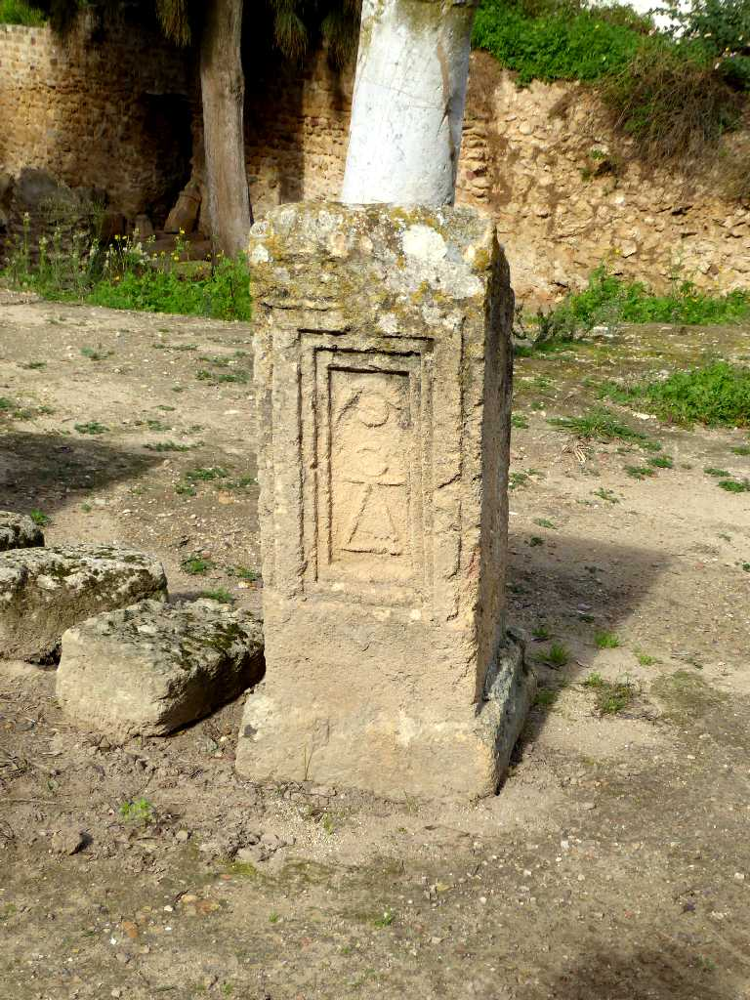
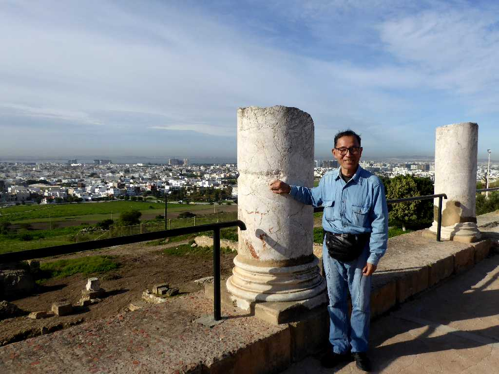

Carthage Tunis
紀元前８１４年に建国され地中海貿易で栄えたフェニキア人の古代都市国家カルタゴの遺跡が１９世紀に発掘された

City State Carthage

Les Ports Puniques Carthage
古代都市国家カルタゴの軍事商業港遺跡で直径３００ｍの円形の港であった

Tanit symbol Tophet Carthage
カルタゴの墓石に刻まれたシンボル

November 22 2018 Carthage Tunis
フェニキアの古代都市国家カルタゴの上に創られたローマ時代の円柱遺跡からチュニスの街を望む